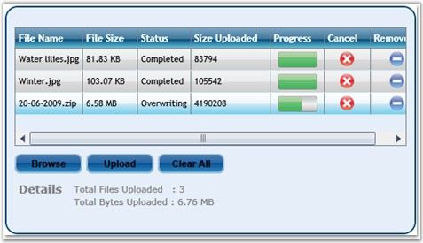
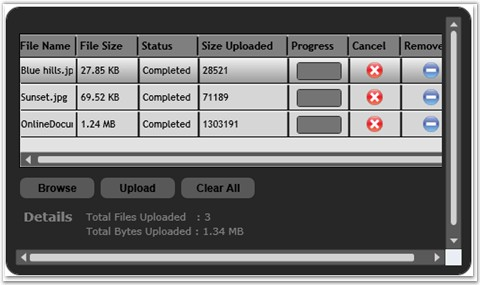
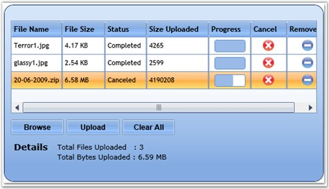
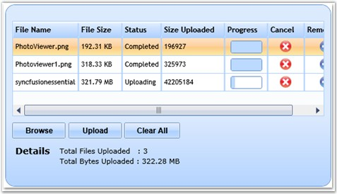
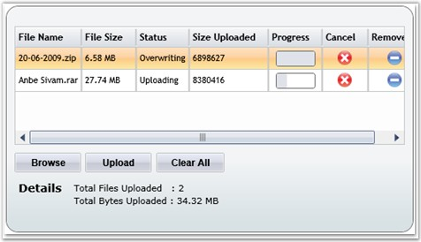
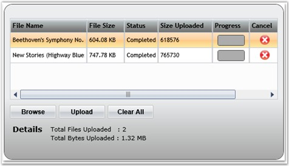
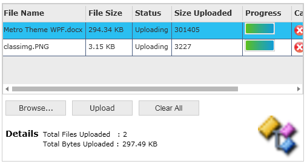

The Skin Manager specifies the visual style for the FileUpload control. The Skin Manager can be used only in Procedural code.
The following visual styles are supported by the FileUpload control.
· Default
· Blend
· Office 2003
· Office 2007 Blue
· Office 2007 Silver
· Office 2007 Black
· Metro
The following code example illustrates how to set the visual style for the control.
|
[C#]
SkinManager.ApplyStyle(NumericUpDown, Syncfusion.Silverlight.Shared.VisualStyle.Office2007Blue); |

Figure 378 : FileUpload with "Default" Visual Style

Figure 379: FileUpload with "Blend" Visual Style

Figure 380 : FileUpload with "Office 2003" Visual Style

Figure 381 : FileUpload with "Office 2007 Blue" Visual Style

Figure 382 : FileUpload with "Office 2007 Silver" Visual Style

Figure 383 : FileUpload with "Office 2007 Black" Visual Style

Figure 384 : FileUpload with "Metro" Visual Style